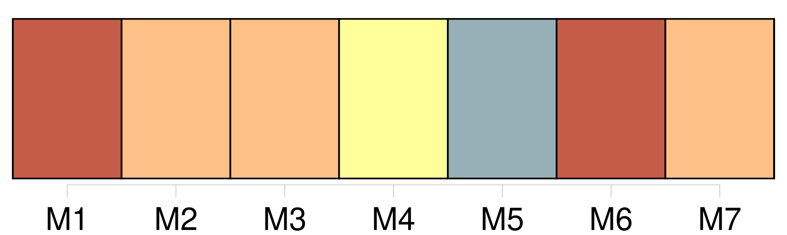
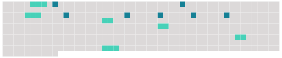

Longueur nb maillons : 13 mentions |
 |
Elle est toujours accompagnée de [son petit garçon] , [qu'] elle appelle Jean, un bambin de sept ans, si parfait de corps et de visage qu'il est difficile de [lui] comparer un autre enfant. [3 phrases]
[Le petit Jean] les ramasse et les [pose] en travers de ma voiture, et comme pour encourager [sa] mère à la patience, [il] lui dit :
Ces visites de Mme Lapierre déplaisaient fort à tante Rude, qui m'a tout de suite avertie que [l'enfant] était sans père et la mère sans mari. [1 phrases]
Manine est sûrement de mon avis, car aussitôt qu'elle aperçoit la mère et [l'enfant] , elle pousse ma voiture sous le gros noyer qui ombrage une partie de la maison et elle apporte pour Mme Lapierre sa plus belle chaise de paille. [3 phrases] C'est, pour elle, des projets touchant l'avenir de [son enfant] , et, pour moi, l'espoir de voir arriver aux prochaines vacances, les petits avec nos parents réconciliés à jamais. [1 phrases]
Tout cela coupé de silences qui nous permettent de nous réjouir du babillage de Clémence et [du petit Jean] , du gazouillis infiniment léger de la petite Reine, du chant des oiseaux dans les branches du noyer, et enfin, des bruits de toutes sortes que font dans la campagne les hommes et les bêtes. |
 |
Il est possible de télécharger la ressource sur la page Ortolang |
Si vous avez des questions ou vous voyez des erreurs, merci d'envoyer un mail à silvia.federzoni89@gmail.com |